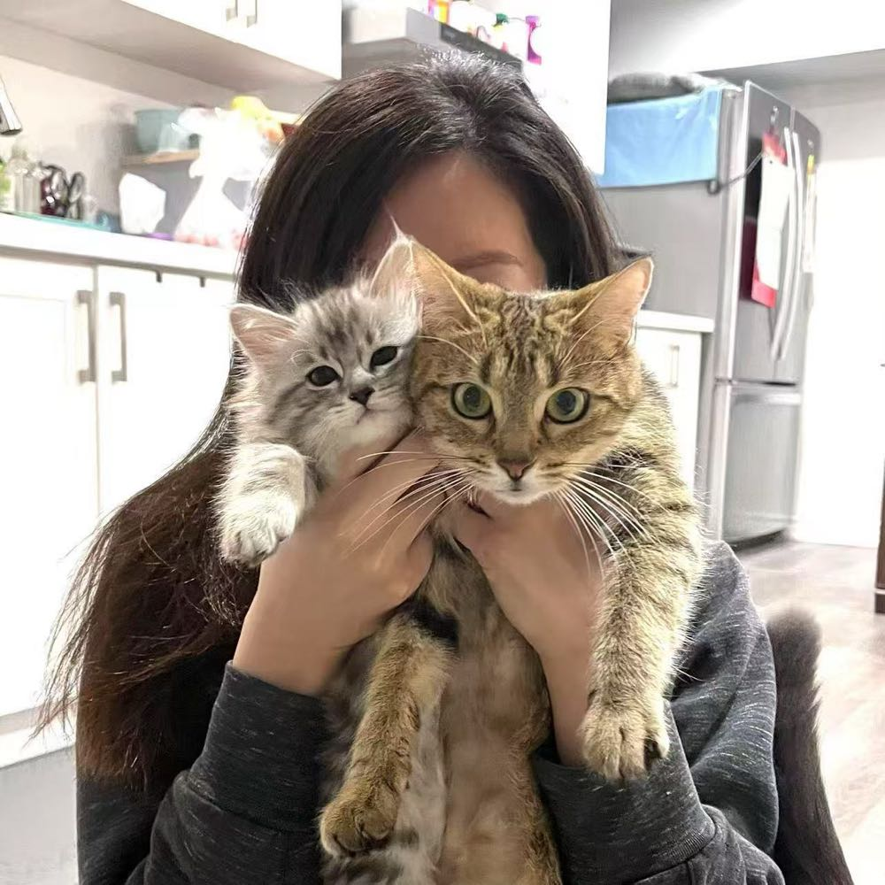
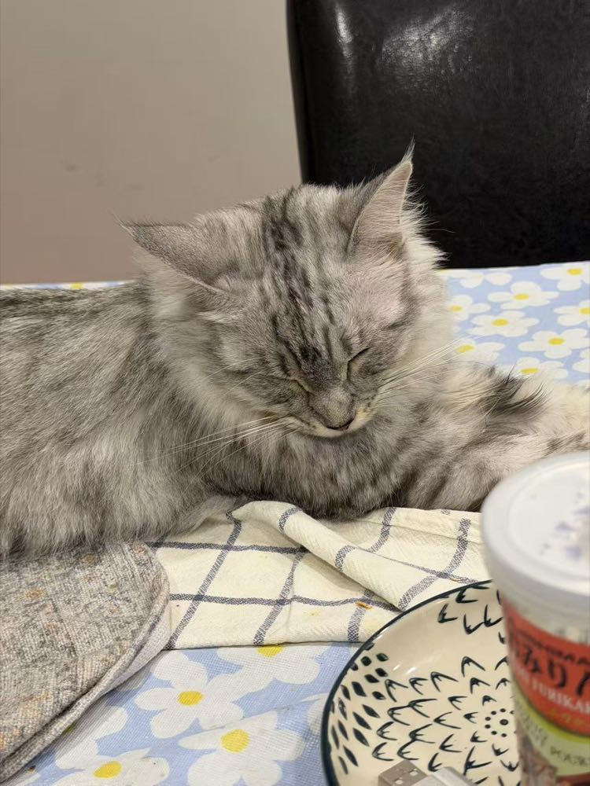
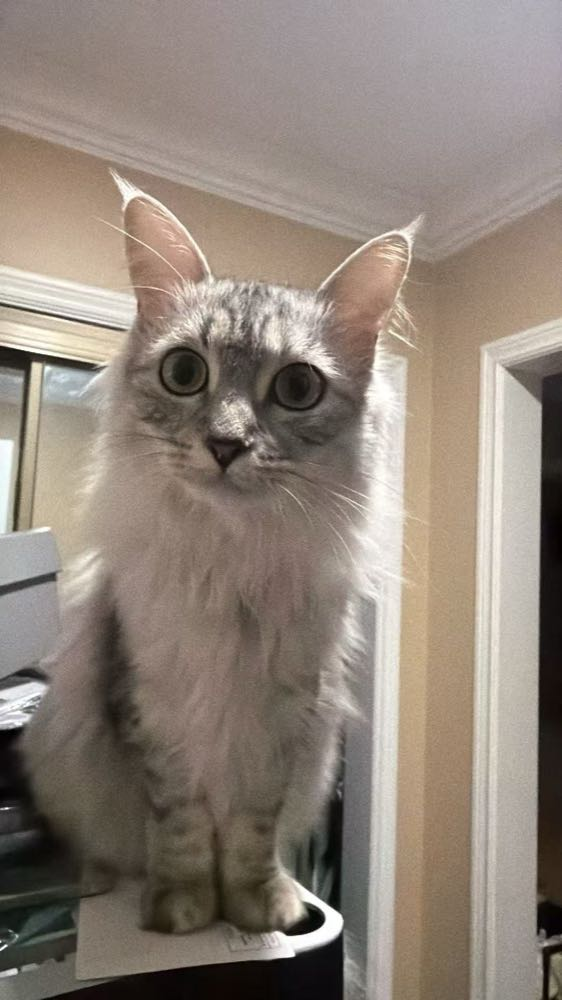

Day one
Num is coming home
Num is a tiny rescue kitten who has never seen your apartment before. Over the next two years, four small decisions will shape who they grow up to be.
Kitten · Week 1
First night home
Num is small, a little nervous, and wide awake. Where do they spend the first night?
Kitten · Month 3
Playtime
Num has discovered they have legs, and that legs can run. How do you spend playtime?

One year old
A weekend away
You have to travel for a weekend. What's the plan for Num?
One year old · Spring
Birds at the window
A family of sparrows has moved into the tree outside. Num is glued to the glass.

Two years later